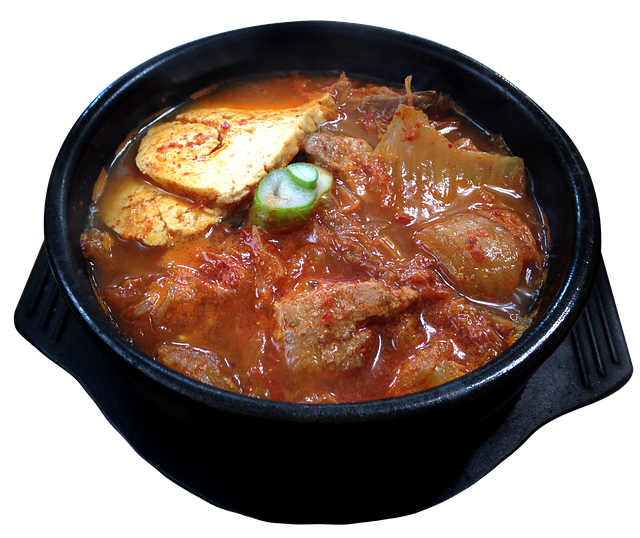

동태찌개
재료:동태(국내산), 무(국내산), 애호박(국내산), 두부(국내산), 콩나물(국내산), 대파(국내산), 청양고추(국내산), 팽이버섯(국내산), 고춧가루(국내산), 된장(국내산)
동태찌개의 특징
멸치 육수와 동태에서 우러나오는 시원한 맛이 특징입니다. 무와 애호박이 더해져 국물이 더욱 깊고 담백합니다.동태는 단백질이 풍부하며 지방 함량이 적어 부드럽고 담백한 살이 특징입니다. 찌개로 끓이면 살이 부드럽게 풀어지며 국물과 잘 어우러집니다.고춧가루와 고추장이 들어가 매콤한 맛이 강조됩니다. 청양고추를 추가하면 얼큰한 맛이 더해져 해장이나 겨울철 요리로 제격입니다.무, 애호박, 대파, 콩나물 등 다양한 채소가 어우러져 영양이 풍부합니다. 두부와 팽이버섯은 찌개의 식감을 더해줍니다.